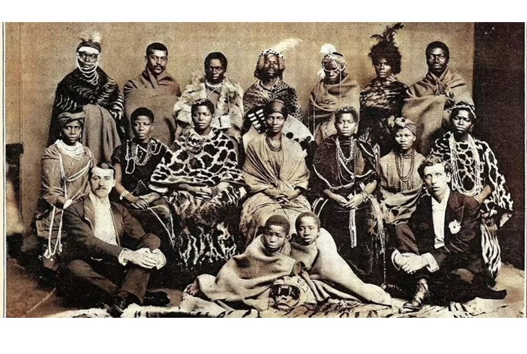

|
The 'dear' friendship of Putin and Xi... in 62 seconds |
|
Russia's Vladimir Putin has welcomed China's Xi Jinping to Moscow, as part of a two day visit.
Appearing in front of cameras, the leaders called each other "dear friend". However, the relationship between the two countries has not always been so positive.
BBC Russia editor Steve Rosenberg and China correspondent Stephen McDonell examine the complex history between the two presidents and question what the future holds for the nations.
Video by James McFadden and Suneil Asar.
|
| |
Five things we've learned from UN climate report |
|
The scientific body that advises the UN on rising temperatures has just released a new report. It's an important summary of six key pieces of research completed over the past five years. Our environment correspondent Matt McGrath considers the critical messages.
|
|  |
The South African choir that performed for Queen Victoria |
|
An unearthed cache of century-old photographs of a South African choir that had performed in Victorian Britain inspired a choreographer to reimagine what they went through as they toured the country.
Gregory Maqoma remembers going into his favourite space in the Apartheid Museum in South Africa's main city, Johannesburg, five years ago.
It is a room in the round - with only one way in and out and gently curving walls that, he says, fills him with a sense of serenity and privacy.
The South African choreographer was drawn to the centre of the room by the sound of music and singing voices.
|